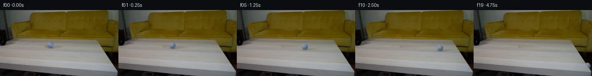

![首帧]()

Round 00
2026-11-04T21:20:40.306866+00:00像素候选变化代码 +179/−0inspection 更新
pixels 307d78bc86714867 · code 36396c9272ad927a
查看本轮 generate.py 真实 diff
--- previous/generate.py
+++ current/generate.py
@@ -0,0 +1,179 @@
+"""Deterministic local pixel continuation; no external models or renderer."""
+from pathlib import Path
+import json
+import numpy as np
+from PIL import Image, ImageDraw
+from scipy.ndimage import gaussian_filter, map_coordinates
+from artifact_io import save
+
+ROOT = Path(__file__).resolve().parent
+W, H, SS = 256, 144, 4
+source = np.asarray(Image.open(ROOT / 'first_frame.png').convert('RGB'))
+yy, xx = np.mgrid[:H, :W].astype(float)
+
+# Restore only the original moving ball and its cast shadow. Table grain is
+# predominantly horizontal here. Reconstruct each affected row between the
+# two clean endpoints, retaining weak grain sampled 52 pixels to the right.
+ball_mask = ((xx-108.7)/9.3)**2 + ((yy-76.2)/8.9)**2
+shadow_mask = ((xx-124.5)/24.5)**2 + ((yy-80.7)/4.7)**2
+restore_weight = np.maximum(np.clip((1.18-ball_mask)/0.3, 0, 1),
+ np.clip((1.12-shadow_mask)/0.3, 0, 1))
+base = source.astype(float).copy()
+for y in range(H):
+ inds = np.flatnonzero(restore_weight[y] > 0)
+ if not len(inds):
+ continue
+ left, right = max(0, inds[0]-2), min(W-1, inds[-1]+2)
+ xs = np.arange(left, right+1)
+ f = (xs-left) / (right-left)
+ # Three-pixel endpoint averages avoid carrying a single noisy sample.
+ l = source[y, max(0,left-2):left+1].mean(axis=0)
+ r = source[y, right:min(W,right+3)].mean(axis=0)
+ reconstructed = l[None,:]*(1-f[:,None])+r[None,:]*f[:,None]
+ donor_x = xs+52
+ donor = source[y,donor_x].astype(float)
+ donor_low = gaussian_filter(donor, sigma=(3.5,0))
+ reconstructed += 0.50*(donor-donor_low)
+ weight = restore_weight[y,xs,None]
+ base[y,xs] = base[y,xs]*(1-weight) + reconstructed*weight
+base = np.clip(base,0,255)
+Image.fromarray(np.uint8(np.rint(base))).save(ROOT / '.tmp' / 'restored_table.png')
+
+# Subpixel image grid. All foreground compositing is at 4x resolution.
+ys, xs = np.mgrid[:H*SS,:W*SS].astype(float)
+xs = (xs+0.5)/SS-0.5
+ys = (ys+0.5)/SS-0.5
+base_hi = np.asarray(Image.fromarray(np.uint8(np.rint(base))).resize(
+ (W*SS,H*SS),Image.Resampling.BICUBIC)).astype(float)
+# The table's right silhouette occludes the sphere after it leaves the top.
+right_edge = 209.0 + (ys-65.0)*45.0/69.0
+solid_table = (ys>=65) & (xs<=right_edge)
+light = np.array([-0.53,0.64,0.56])
+light /= np.linalg.norm(light)
+
+# Constant initial speed and weak rolling deceleration; no bounce or impulse.
+def surface_x(t):
+ return 109.0+30.8*t-0.44*t*t
+
+def surface_y(x):
+ return 76.5+0.080*(x-109.0)
+
+def radius_at(x):
+ return 6.5+0.0015*(x-109.0)
+
+# Solve the projected contact position against the photographed table edge.
+edge_x = (209+(76.5-0.08*109+6.5-0.0015*109-65)*45/69)/(1-(0.08+0.0015)*45/69)
+edge_time = (30.8-np.sqrt(30.8**2-4*0.44*(edge_x-109)))/(2*0.44)
+edge_speed = 30.8-0.88*edge_time
+
+# Texture lives on the sphere, so only its markings rotate while the light
+# stays in the camera frame. The seam is a closed wavy spherical curve.
+def ball_layer(cx, cy, radius, angle):
+ nx = (xs-cx)/radius
+ ny = -(ys-cy)/radius
+ rr = nx*nx+ny*ny
+ inside = rr<=1
+ nz = np.sqrt(np.maximum(0,1-rr))
+ diffuse = np.clip(light[0]*nx+light[1]*ny+light[2]*nz,0,1)
+ color = np.array([79.,94.,115.])[None,None,:] + diffuse[...,None]*np.array([55.,58.,61.])
+ ca,sa = np.cos(angle),np.sin(angle)
+ qx = ca*nx-sa*nz
+ qz = sa*nx+ca*nz
+ phi = np.arctan2(qz,qx)
+ seam_dist = ny - 0.32*np.sin(2*phi+0.9)
+ seam = np.exp(-0.5*(seam_dist/0.045)**2)
+ color += seam[...,None]*np.array([13.,18.,18.])
+ # Low-amplitude fuzz with fixed sphere coordinates; deterministic and
+ # advected with the rotation. It stays subtle at this 13-pixel diameter.
… diff truncated; 92 more lines …